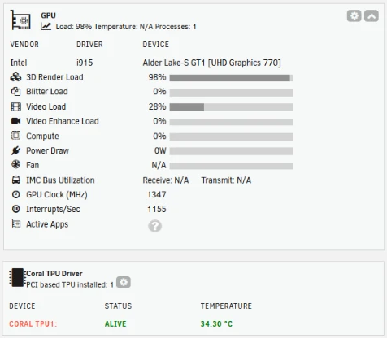

Homelab · Cameras and AI
A camera recorder that does its AI at home
Frigate records my cameras and runs object detection, face recognition and semantic search on my own server. Its job in the system is to get the doorbell onto the dashboard and to get AI events into Home Assistant.
- Alert rules
- 3on one camera
- Stream paths
- 3compared for the doorbell
- Cameras
- 4on the camera grid

What Frigate does
Frigate is an open-source network video recorder with AI detection. It runs as a container on the Unraid server and uses two pieces of hardware for its work: a Google Coral, a small AI accelerator, and the integrated graphics of the server's i7-12700K processor.
- Object detection picks out people, packages, animals and cars in the video.
- Face recognition matches faces against a face library kept in Frigate.
- Semantic search finds past detections from a plain description.
Frigate feeds two things. Its alert events go into Home Assistant, which decides who hears about them. It also supplies the front door tile on the camera grid shown by the wall tablet and the TV. The doorbell's own person and visitor sensors are what switch those screens to cameras, so both paths are needed for the full result.


One camera, three alert rules
One camera has three notification rules in Home Assistant, each with a different job.
| Rule | What triggers it | Where it goes |
|---|---|---|
| People, packages, animals | Frigate detects one of those labels | iPhones, with a thumbnail, a clip and a live view |
| Cars | A car crosses the driveway entrance and then the driveway, in that order | iPhones |
| TV overlay | A Frigate alert event | An on-screen overlay on the TV through the NVIDIA Shield |
Why zones in order. The car rule needs both zones crossed in order, so it fires for a car moving into the driveway, not for one that only touches a single zone.
Getting the doorbell into the recorder
The Reolink doorbell stream was unstable when it went straight into Frigate. I compared three ways of feeding it in. One used Scrypted, a camera bridge, and one used MediaMTX, a stream relay server.
| Path tried | Stability | Delay | Outcome |
|---|---|---|---|
| Doorbell straight into Frigate | Unstable | Low | Rejected |
| Doorbell through a Scrypted bridge into Frigate | Stable | Higher | Kept |
| Doorbell through MediaMTX into Frigate | Unstable | Low | Rejected. No better than the direct connection. |
Decision. I chose the bridge that added delay but stopped the stream dropping. Stability won over low delay.
What I have not done yet is measure how much delay the bridge adds. That is the next step, so the trade-off has a number on it.